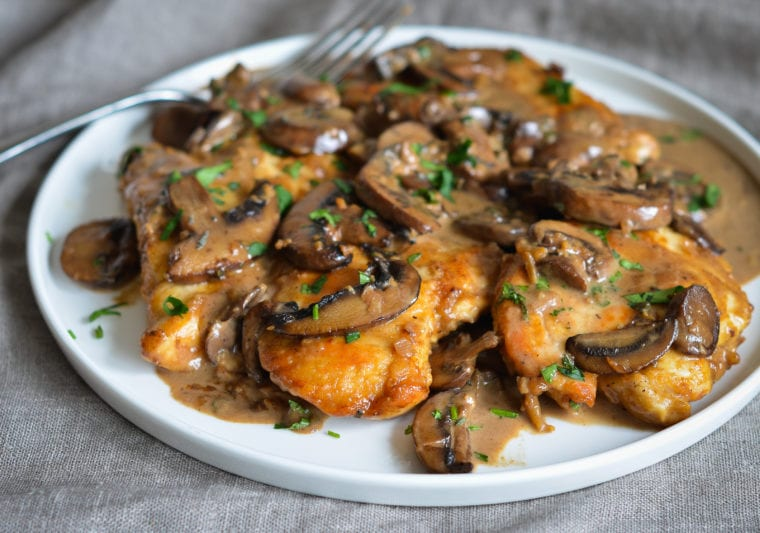

Home

Description
Needed more reasons to guzzl-I mean cook with white wine. Seriously though, once you make this, it'll never leave your cookbook.
Serves 4
Prep: 15 minutes
Cook: 30 minutes
Total: 45 minutes
Ingredients
- 1-1 1/2lbs boneless chicken breasts, pounded 1/4-inch thick
- 3 tbsp all-purpose flour
- salt
- black pepper
- 1 tbsp olive oil
- 3 tbsp butter, divided
- 1(8oz)package pre-sliced mushrooms
- 3 tbsp shallots
- 2 cloves garlic
- 2/3 cup chicken broth
- 2/3 cup dry white wine
- 2/3 cup heavy cream
- 2 tsp thyme
- 2 tbsp parsley
Directions
- Place flour, salt and pepper in ziplock bag. Add chicken to bag; seal tightly and shake to coat chicken evenly. Set aside.
- Heat oil in large skillet over medium-high heat. Place flour-dusted chicken in pan, first shaking off any excess, cook, turning once, until chicken is golden and just barely cooked through, about 5-6 minutes. Transfer chicken to a plate and set aside.
- Melt remaining butter in pan. Add mushrooms and cook, stirring frequently, until they begin to brown, 3 to 4 minutes.
- Add shallots, garlic, and salt; cook for 2 to 2 minutes more.
- Add broth, wine, heavy cream, thyme, salt and pepper; use wooden spoon to scrape brown bits from pan to liquid. Bring to a boil, then reduce heat to medium and gently boil, uncovered, until the sauce is reduced by half, slightly thickened, and darkened in color, 10 to 15 minutes.
- Add chicken back to pan, and baste with excess juices. Reduce heat to low and simmer until chicken is warmed through and sauce thickens, 2 to 3 minutes.
- Sprinkle with parsley and serve.